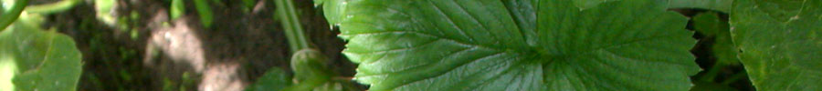
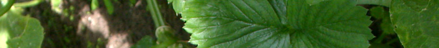

| News | Events | Resources | About | Contact |

|
||||||
| ...promoting investment in environmentally, socially and culturally sustainable food systems | ||||||
| ||||||
 | ||||||
|
Schedule April 21 April 22 Each Second Thursday What does "buy local" mean? When you buy from a big chain store, you may pay a slightly lower price, but most of the money is quickly taken out of the community, resulting in a poorer local economy. Buying at a local independent store keeps much more of your money circulating in the local economy, providing more jobs and tax revenue to keep the community strong and healthy. Local groups like the Austin Independent Business Alliance work to promote the advantages of buying locally. |
Events Slow Money Austin Showcase April 21, 12:30 - 5:00 p.m. Slow Money Austin and the City of Austin will bring a conversation about financing our regional food system to the front steps of City Hall with an educational conference featuring leaders of this emerging industry. Local, organic and artisan-crafted food and drink are cherished assets among communities throughout the nation. Beyond the health and environmental benefits of local food production, such resources, if properly cultivated, can directly power local and regional economies. Calling for a new form of venture capital, this special event promises to redefine the value and worth of a healthy local food system, and to examine the role risk capital can play in fueling growth of such a vital market. Hosted by Slow Money Austin and the City of Austin, and featuring:
Programming highlights include:
Slow Money Austin Fundraising Dinner April 22, 6:00 p.m. The following evening, on Earth Day, April 22, the Slow Money Austin Fundraising Dinner will be held at the critically acclaimed Barr Mansion, known for its historic setting and commitment to local organic cuisine and culture. This special dinner program will combine a delectable exploration of the diverse, sustainably grown riches Central Texas has to offer with a continued conversation about funding growth in our regional food system. Hosted by Slow Money Austin & Barr Mansion, featuring sustainably grown menu and special pairings. |
Our Partners Skematik |
| Copyright © 2010 Slow Money Austin - All Rights Reserved |